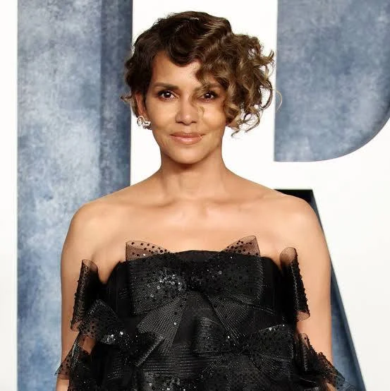
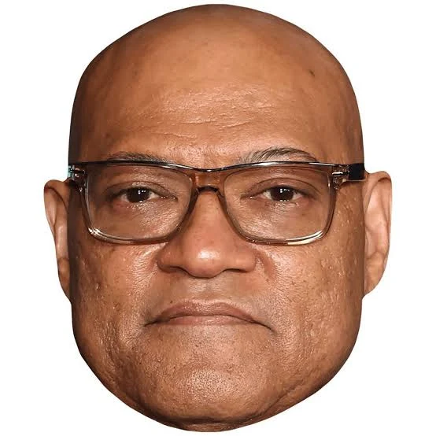

Sinopse
Após assassinar o chefe da máfia Santino D'Antonio no Hotel Continental, John Wick passa a ser perseguido pelos membros da Alta Cúpula sob a recompensa de U$14 milhões. Agora, ele precisa unir forças com antigos parceiros que o ajudaram no passado enquanto luta por sua sobrevivência.
Trailer
A prévia mostra John Wick recorrendo à personagem de Anjelica Huston, conhecida como A Diretora. Mesmo tendo sido a responsável pela criação de John, a mulher aparentemente não atende ao pedido de passagem dele - no início, ouvimos a atriz dizendo “não há saída para você. A Alta Cúpula quer a sua vida” e, depois, “não posso ajudá-lo”.
Vale notar que, nesta cena, Wick está segurando um crucifixo, o mesmo que vemos depois dentro de um livro com outras moedas e uma foto dele com a esposa. O objeto pode ser outro elemento importante dentro da cultura dos assassinos.
Elenco
Kaenu Reeves
Jhon Wick
Descrição: Jhon Wick é o protagiinsta da obra, sabemos que ele é orfão e o melhor assassino da organização.
Halle Berry
Sofia Al-Azwar
Descrição: "Amiga" de Jhon Wick, quando ele está sendo perseguido, ela o ajuda, pois o deve um favor.
Laurence Fishburne
Bowery King
Descrição: Ele é o Rei do Bowery no filme e praticamente sabe de tudo, pois possui um vasto sistema de comunicação, que é interessante pois utiliza pombos-correios.
Asia Kate Dillon
The Adjudicator
Descrição: No filme, é uma alta figura de autoridade da Alta Cúpula (High Table), servindo como o braço da lei e a executora das regras, punindo aqueles que ajudaram John Wick a quebrar a ordem.
Mark Daxascos
Zero
Descrição: É um assassino e líder de ninjas contratado pelo Adjudicador para eliminar John Wick.
Curiosidade
Curiosidade 1:Jhon Wick tem que cortar seu dedo onde ficava sua aliança para provar ser fiel a organização e não a sua falecida esposa.
Curiosidade 2:Kaenu Reeves aprendeu algumas artes marciais para poder interpretar melhor o papel de Jhon Wick.Curiosidade 3:No Filme Kaenu Reeves não precisou de dublês, ele fez todas as cenas com Jhon Wick.


Contato
GitHub

nickfelisbelo
Whatszap
19 99836-5815
nicollas.felisbelo